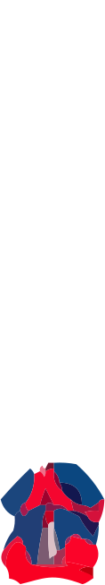
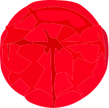
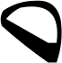

Главная
Г
л
а
в
н
а
я
М
о
и
р
а
б
о
т
ы
П
р
о
м
е
н
я
К
о
н
т
а
к
т
ы
Максим Марьин — Дизайнер / Веб-разработчик
Максим
Марьин
дизайнер /
веб-разработчик
Портфолио
Погашение
кредита
веб-сайт /
IPMARIN — Взаимная поддержка
Подробнее
Про Меня
Делаю сайты, и мне это нравится
Отдых — чтение
Больше информации
  
Hi
Z
Z
Связь
со мной
marinmaxim9v@gmail.com
